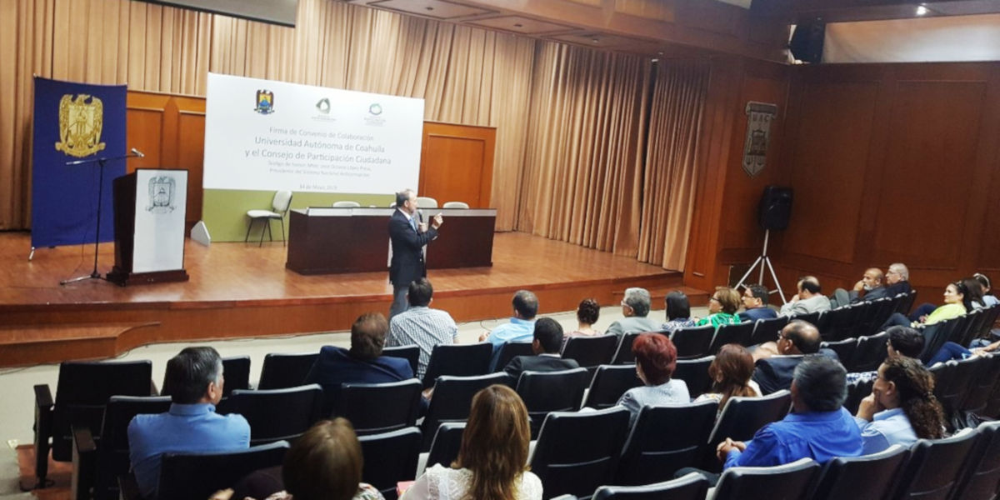

La presidenta del CPC del Sistema Estatal Anticorrupción (SEA), Ana Yuri Solís junto al Rector de la Universidad Autónoma de Coahuila (UADEC), Salvador Hernández Vélez, firmaron un convenio de colaboración con el objetivo de implementar estrategias y acciones encaminadas al combate anticorrupción, promoviendo una nueva cultura basada en la honestidad entre la comunidad estudiantil e involucrando a los jóvenes en el combate a la corrupción, así como impulsar el desarrollo de proyectos comunitarios para la prevención de la corrupción y la evaluación de las políticas públicas en el control de la misma.
El evento se llevó a cabo en el Auditorio Magno de la Facultad de Jurisprudencia, cuyos alumnos escucharon atentamente la Conferencia “Sistema Nacional Anticorrupción: Retos y Logros”, impartida por el Presidente del Comité de Participación Ciudadana del Sistema Nacional Anticorrupción, José Octavio López Presa.
La firma de este convenio contribuye a que el Consejo de Participación Ciudadana cumpla con ser la instancia de vinculación con las organizaciones sociales y académicas relacionadas con las materias del Sistema Estatal, de igual manera favorece al cumplimiento del objetivo del Sistema, el cual es establecer principios, bases generales, políticas públicas y procedimientos para la coordinación entre las autoridades de los Entes Públicos en la prevención, detección y sanción de faltas administrativas y hechos de corrupción, así como en la fiscalización y control de recursos públicos.


14 mayo 2019